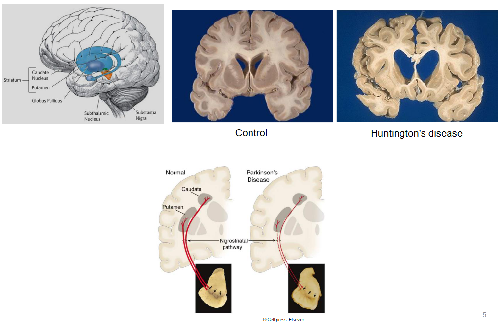
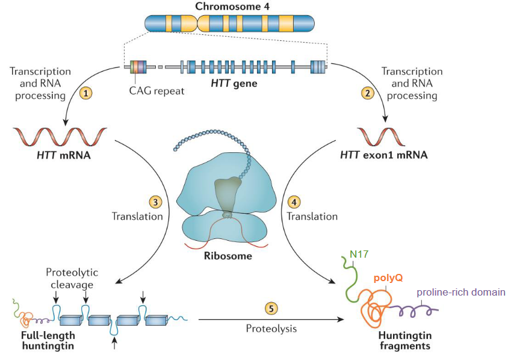
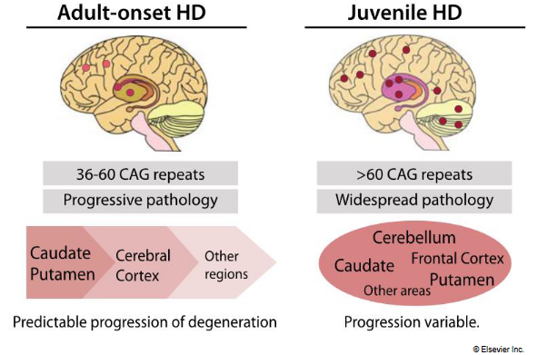
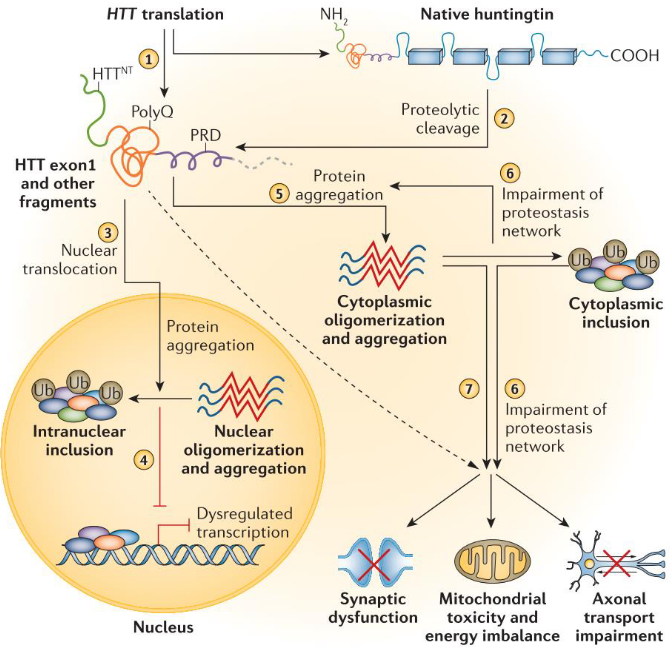
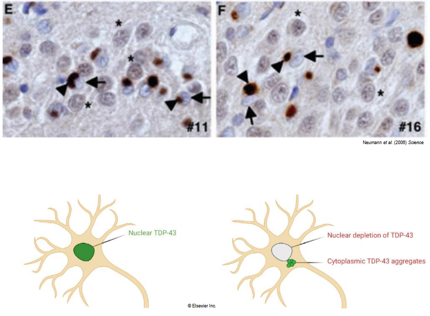
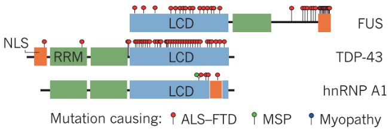
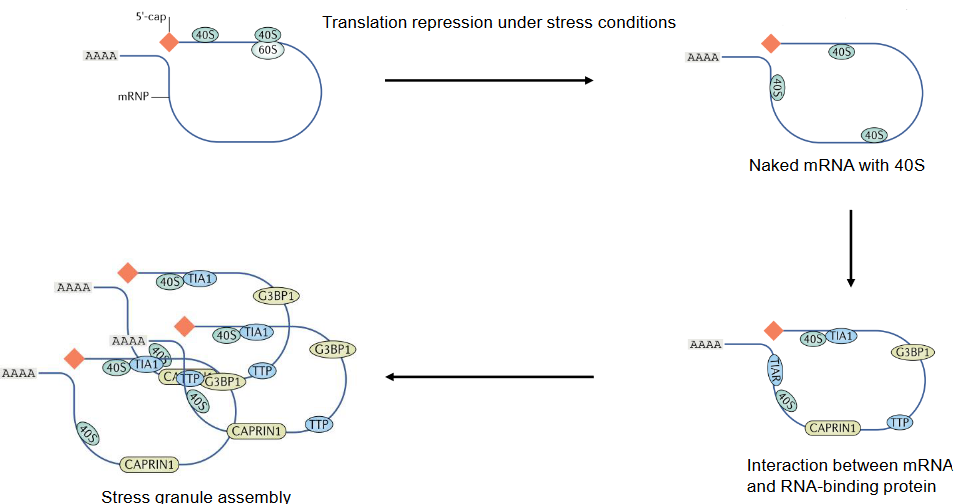
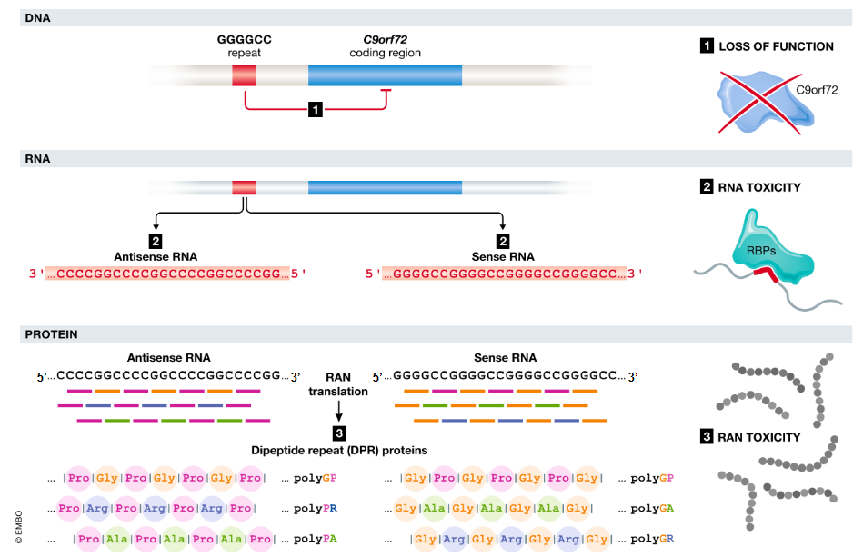

11 ALS and Huntington’s Disease
11.1 Huntington’s Disease
Huntington’s disease, also known as chorea, is a neurological disorder characterized by involuntary movements and progressive degeneration of brain cells. The term “chorea” derives from the Greek word for dance, reflecting the characteristic dancing-like movements exhibited by affected individuals. While not typically life-threatening, Huntington’s disease can significantly impact a person’s quality of life and ability to function.
The hallmark feature of Huntington’s disease is chorea, a type of involuntary movement that affects voluntary muscles. Unlike seizures in epilepsy, individuals with chorea maintain awareness and intention during these movements, but their ability to control their muscles is impaired. The movements may start as subtle twitches in the face and gradually progress in frequency and intensity.
Common early symptoms include facial twitching, blinking, raised eyebrows, nose movements, and various mouth contortions, resulting in a peculiar and sometimes comical appearance. Over time, chorea may affect the upper extremities and other voluntary muscles throughout the body, leading to jerky, uncontrollable movements that interfere with daily activities.
While chorea is a prominent feature of Huntington’s disease, the condition can also cause a range of other symptoms, including cognitive decline, psychiatric disturbances, and behavioral changes. These symptoms can significantly impact a person’s emotional well-being and ability to engage in social interactions.
Huntington’s disease is caused by a genetic mutation that leads to the progressive degeneration of nerve cells in certain regions of the brain. Currently, there is no cure for Huntington’s disease, and treatment focuses on managing symptoms and improving quality of life through medications, therapy, and support services.
11.1.1 What is it?
Huntington’s disease (HD) is an autosomal dominant genetic disorder caused by mutations in the HTT gene located on chromosome 4. This means that an affected individual only needs one copy of the mutated gene from either parent to develop the disease. Both males and females are equally affected by HD. The typical age of onset for Huntington’s disease is between 30 and 50 years old, although symptoms can appear at almost any age. The disease progresses gradually over approximately 15 years from the onset of symptoms. The prevalence of Huntington’s disease is relatively low, estimated to affect about 5 to 10 individuals per 100,000 people in the population.
11.1.2 Pathology
Huntington’s disease (HD) is characterized by progressive degeneration of nerve cells in certain regions of the brain, leading to widespread neurological dysfunction. The pathology of HD involves several key features:
Striatal Atrophy: One of the hallmark pathological changes in HD is atrophy (shrinkage) of the striatum, a region deep within the brain involved in motor control, cognition, and emotion. Specifically, there is pronounced loss of medium spiny neurons in the striatum, particularly in the caudate nucleus and putamen. This neuronal loss contributes to the motor symptoms, cognitive impairment, and psychiatric disturbances seen in HD.
Cortical Atrophy: In addition to striatal atrophy, individuals with HD also exhibit cortical atrophy, particularly in the frontal and temporal lobes of the brain. This cortical degeneration contributes to cognitive decline and behavioral changes observed in HD patients.
Neuronal Inclusions: Another pathological hallmark of HD is the presence of intracellular aggregates of mutant huntingtin protein within neurons. These neuronal inclusions, known as Huntington protein aggregates or Huntington bodies, disrupt cellular function and contribute to neuronal dysfunction and death.
Glial Activation: In response to neuronal damage and protein aggregation, glial cells, including astrocytes and microglia, become activated and contribute to neuroinflammation and neurodegeneration in HD. Glial activation may exacerbate neuronal damage and further impair brain function in individuals with HD.
Altered Neurotransmission: HD is associated with dysregulation of neurotransmitter systems, including dopamine, glutamate, and gamma-aminobutyric acid (GABA). Imbalances in neurotransmission contribute to motor symptoms, cognitive deficits, and psychiatric disturbances in HD patients.
White Matter Abnormalities: HD is also characterized by alterations in white matter integrity, including loss of myelin and disruption of axonal pathways. These white matter abnormalities contribute to connectivity deficits and cognitive dysfunction in HD.
11.1.3 Mutations in the HTT Gene
Mutations in the huntingtin (HTT) gene are the underlying cause of Huntington’s disease (HD). The HTT gene provides instructions for making the huntingtin protein, which plays a role in various cellular functions, including neuronal development and survival. However, mutations in the HTT gene lead to the production of an abnormal form of the huntingtin protein, known as mutant huntingtin (mHTT), which is toxic to neurons.
The most common mutation associated with HD is an expansion of a CAG trinucleotide repeat within the HTT gene. Normally, this CAG repeat is present in the gene in a stable, repeat length of approximately 10 to 35 repeats. However, in individuals with HD, the CAG repeat expands beyond this normal range, resulting in an increased number of repeats. The length of the CAG repeat expansion is directly correlated with the age of onset and severity of HD symptoms, with longer repeat lengths typically associated with earlier onset and more severe disease progression.
The expanded CAG repeat leads to the production of an abnormal huntingtin protein with an elongated polyglutamine (polyQ) tract. This mutant huntingtin protein has a tendency to misfold and aggregate within neurons, forming toxic protein aggregates that disrupt cellular function and lead to neuronal dysfunction and death. The exact mechanisms by which mutant huntingtin exerts its toxic effects are still under investigation, but it is thought to disrupt various cellular processes, including mitochondrial function, protein quality control, neurotransmitter signaling, and gene transcription.
11.1.3.1 Huntingtin Protein Fragments

11.1.4 Juvenile Huntington’s Disease

Juvenile Huntington’s disease (JHD) is a rare form of Huntington’s disease that begins in individuals under the age of 20. Unlike the more common adult-onset form of HD, JHD tends to progress more rapidly, with a shorter average life expectancy after diagnosis, typically around 15 years.
One notable difference between JHD and adult-onset HD is the pattern of motor symptoms. While adults with HD often experience prominent chorea (involuntary movements), children and young people with JHD may exhibit milder chorea or even no involuntary movements at all. Instead, they may develop stiffness and rigidity, making movements more difficult.
As JHD progresses, individuals may experience difficulties with chewing, swallowing, and speaking due to muscle stiffness and weakness. These challenges can significantly impact their ability to eat, communicate, and perform daily activities.
In approximately 25% of JHD cases, individuals may also experience epileptic seizures, a symptom that is rare in adult-onset HD. Seizures can further complicate the management of the disease and may require additional medical interventions.
11.1.5 Pathogenic Mechanisms of Huntington’s Disease

Huntington’s disease (HD) is a neurodegenerative disorder characterized by the progressive dysfunction and loss of neurons in certain regions of the brain. While the exact pathogenic mechanisms underlying HD are complex and multifaceted, several key processes contribute to the development and progression of the disease:
Mutant Huntingtin Protein (mHTT) Aggregation: The primary genetic cause of HD is an expanded CAG repeat in the HTT gene, leading to the production of mutant huntingtin protein (mHTT). Mutant huntingtin has an elongated polyglutamine (polyQ) tract, which confers a propensity to misfold and aggregate within neurons. These aggregates, known as inclusion bodies or Huntington bodies, disrupt cellular function and contribute to neuronal dysfunction and death.
Disruption of Protein Homeostasis: Mutant huntingtin protein interferes with protein homeostasis, leading to impairment of protein folding, trafficking, and degradation processes within neurons. This disruption of protein homeostasis results in the accumulation of misfolded proteins and aggregates, further exacerbating neuronal dysfunction and toxicity.
Mitochondrial Dysfunction: Mitochondrial dysfunction is a prominent feature of HD pathology, characterized by impaired mitochondrial function, oxidative stress, and energy deficits within neurons. Mutant huntingtin interferes with mitochondrial dynamics, leading to fragmentation of mitochondria and impaired energy production. Dysfunctional mitochondria contribute to neuronal degeneration and cell death in HD.
Excitotoxicity and Neurotransmitter Dysregulation: Glutamate excitotoxicity, resulting from excessive glutamate release and impaired neurotransmitter regulation, plays a significant role in HD pathogenesis. Excitotoxicity leads to neuronal hyperexcitability, calcium influx, and activation of cell death pathways, contributing to neuronal dysfunction and degeneration in HD.
Neuroinflammation: Neuroinflammation, characterized by activation of glial cells (astrocytes and microglia) and release of pro-inflammatory cytokines, is a prominent feature of HD pathology. Chronic neuroinflammation exacerbates neuronal damage and contributes to disease progression by promoting oxidative stress, excitotoxicity, and neuronal death.
Transcriptional Dysregulation: Mutant huntingtin disrupts gene transcription and expression through interactions with transcriptional regulators and chromatin remodeling proteins. Dysregulated gene expression leads to alterations in neuronal function, synaptic plasticity, and cell survival pathways, contributing to HD pathogenesis.
11.2 Amyotrophic Lateral Sclerosis
ALS, also known as “Lou Gehrig’s Disease” in the states is a progressive neurodegenerative disorder that affects nerve cells in the brain and spinal cord. Unfortunately, ALS is indeed invariably fatal, and most individuals diagnosed with the disease typically succumb to it within 3 to 5 years after diagnosis.
The prevalence of ALS is relatively low, but it still represents a significant burden of disease in the United States and the United Kingdom. In these countries, ALS accounts for more than 1 in 500 deaths among adults, highlighting the severity of the condition and the need for continued research and support for individuals and families affected by ALS.
Despite ongoing efforts to understand the underlying causes and develop effective treatments for ALS, the disease remains challenging to treat, and there is currently no cure. However, advances in research have led to the development of supportive therapies that can help manage symptoms and improve quality of life for individuals living with ALS.
11.2.1 Symmptoms
ALS, or amyotrophic lateral sclerosis, presents with a range of symptoms that can affect mobility, speech, and breathing. Initially, individuals may notice difficulties with walking, running, or writing, as well as speech problems. As the disease progresses, muscle weakness worsens, eventually leading to the inability to move. When the muscles involved in breathing become affected, respiratory failure occurs, which is the primary cause of death for most people with ALS. While a breathing machine can assist with breathing, it does not cure the disease.
ALS typically manifests between the ages of 40 and 60, with more men than women being affected. The exact cause of ALS is unknown, although it can sometimes run in families. However, in most cases, it occurs randomly without a clear genetic predisposition. Unfortunately, there is currently no cure for ALS, but medications can help alleviate symptoms and, in some cases, prolong survival.
Eating problems are common in ALS due to muscle weakness affecting swallowing. This can lead to malnutrition, dehydration, and an increased risk of pneumonia from food, liquids, or saliva entering the lungs. To address these issues and ensure proper nutrition and hydration, a feeding tube may be recommended for individuals with ALS.
11.2.2 SOD1
Superoxide dismutase 1 (SOD1) was the first gene to be identified as linked to amyotrophic lateral sclerosis (ALS). Mutations in the SOD1 gene were discovered in the early 1990s and are found in a subset of individuals with familial ALS, which is inherited from one or both parents.
SOD1 encodes an enzyme called copper-zinc superoxide dismutase, which plays a crucial role in antioxidant defense by converting superoxide radicals into oxygen and hydrogen peroxide. Mutations in the SOD1 gene lead to a toxic gain of function in the enzyme, causing it to misfold and aggregate within motor neurons, leading to neuronal damage and death.
Although SOD1 mutations account for only a small percentage of ALS cases, studying the role of SOD1 in the disease has provided valuable insights into the underlying mechanisms of ALS pathology.
11.2.3 TDP-43 Inclusion Body in the Cytoplasm

In amyotrophic lateral sclerosis (ALS) and certain other neurodegenerative diseases, including frontotemporal lobar degeneration (FTLD), abnormal protein aggregates are commonly found in affected neurons. One of the hallmark pathological features of ALS and FTLD is the presence of cytoplasmic inclusions containing TDP-43 protein.
TDP-43 (transactive response DNA-binding protein 43 kDa) is a nuclear protein involved in RNA processing and regulation of gene expression. In ALS and FTLD, TDP-43 is abnormally cleaved and aggregated, leading to its accumulation in the cytoplasm of neurons. These cytoplasmic TDP-43 inclusions, also known as TDP-43 proteinopathies, are considered a pathological hallmark of these diseases.
The aggregation of TDP-43 into insoluble amyloid fibrils is a prominent pathological feature observed in the brains and spinal cords of individuals with ALS and certain other neurodegenerative diseases, such as frontotemporal lobar degeneration (FTLD). These TDP-43 aggregates disrupt normal cellular functions, including RNA metabolism, protein homeostasis, and cellular signaling pathways, ultimately leading to neurodegeneration and motor neuron death.

In addition to TDP-43, other RBPs have also been implicated in ALS pathogenesis, including FUS (fused in sarcoma) and hnRNPA1 (heterogeneous nuclear ribonucleoprotein A1). Like TDP-43, mutations in these RBPs can lead to their abnormal aggregation and accumulation in ALS-affected neurons, further contributing to disease pathology.
11.2.4 Stress Granules

Stress granules are membraneless organelles found in the cytoplasm of eukaryotic cells, particularly during times of cellular stress. Unlike traditional organelles with distinct membrane boundaries, stress granules are dynamic, transient structures that form in response to various stressors, such as heat shock, oxidative stress, viral infection, or nutrient deprivation.
The primary function of stress granules is to sequester and store specific messenger RNA (mRNA) molecules and associated proteins, preventing their translation into proteins. This sequestration allows the cell to conserve energy and prioritize essential cellular processes under stress conditions. Additionally, stress granules serve as sites for mRNA triage, where transcripts are sorted based on their stability and translation efficiency.
Stress granules are composed of a diverse array of RNA-binding proteins, ribosomal subunits, translation initiation factors, and other RNA-binding proteins. These components dynamically assemble and disassemble within stress granules in response to changing cellular conditions. Importantly, aberrant regulation of stress granule dynamics has been implicated in the pathogenesis of various neurodegenerative diseases, including amyotrophic lateral sclerosis (ALS) and frontotemporal dementia (FTD).
11.2.4.1 Amyloid Fibril Formation

The hexanucleotide repeat expansion in the C9orf72 gene is a common genetic abnormality associated with both amyotrophic lateral sclerosis (ALS) and frontotemporal dementia (FTD). This repeat expansion consists of an abnormal expansion of a hexanucleotide (GGGGCC) within a non-coding region of the C9orf72 gene. Normally, this hexanucleotide repeat is present in a small number of copies, but in affected individuals, it can be repeated hundreds to thousands of times.
One of the consequences of the hexanucleotide repeat expansion is the generation of abnormal RNA structures, including RNA foci, which can sequester RNA-binding proteins and disrupt normal cellular functions. Additionally, the expanded repeat region can undergo repeat-associated non-ATG (RAN) translation, a phenomenon in which the repeat sequence is translated into abnormal proteins in the absence of an initiating ATG codon.
RAN translation leads to the production of dipeptide repeat (DPR) proteins, which are toxic to cells and have been implicated in the pathogenesis of ALS and FTD. These DPR proteins can aggregate and form insoluble intracellular inclusions, contributing to neuronal dysfunction and cell death.
Interestingly, stress granules, which are membraneless organelles that form in response to cellular stress, have been implicated in the sequestration and aggregation of DPR proteins. Under conditions of stress, such as heat shock or oxidative stress, stress granules may provide a site for the accumulation and aggregation of DPR proteins, potentially exacerbating cellular dysfunction and contributing to disease progression in ALS and FTD.